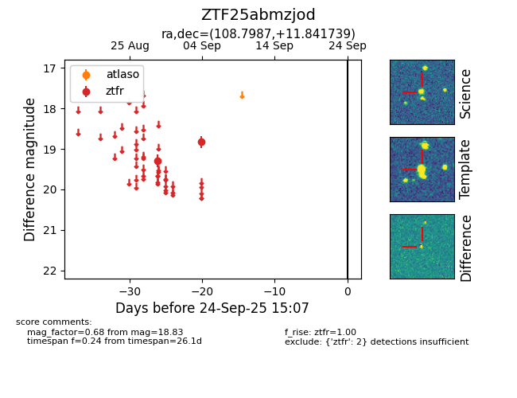

FINK: ZTF25abmzjod
Lasair: ZTF25abmzjod
ALeRCE: ZTF25abmzjod
ZTF25abmzjod (ztf,fink)
equatorial (ra, dec) = (108.7987,+11.84174)
galactic (l, b) = (204.9525,+10.58549)

last ztfr=18.83
2 ztfr detections